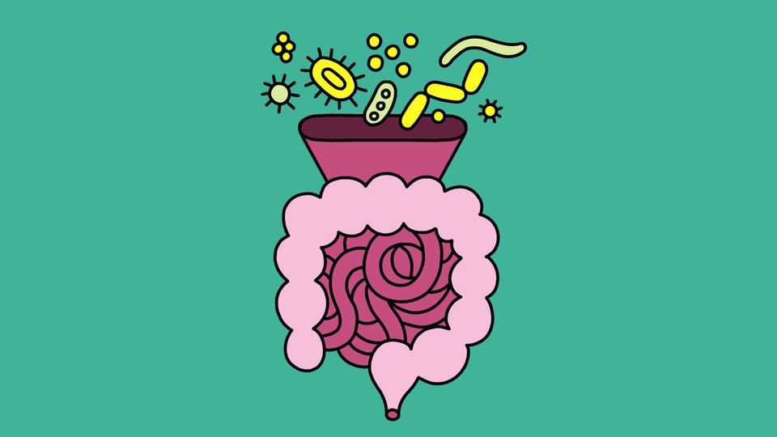

Can you hack your gut microbiome?
Yes. But perhaps best not to overthink it

Aug 13th 2026
THE TRILLIONs of bugs in a human gut digest complex carbohydrates into fatty acids that provide about 10% of an individual’s calories. They synthesise vitamins, notably K (which regulates blood clotting) and various members of the B group. They help tune the immune system. They suppress the growth of pathogens. And they regulate production of signalling molecules, such as serotonin, involved in sending messages from the gut to the brain.
Keeping your gut microbiome in tip-top condition is thus wise. Maintaining a diverse mix of bacteria in it is widely thought a good way to do this. And, since different species have different appetites, diversity of diet makes sense.
In 2018 an American citizen-science project showed that people eating 30 types of plants a week had significantly more diverse microbiomes than those eating fewer than ten. And work from Stanford University, published in 2021, confirmed that fermented foods such as kimchi and sauerkraut diversify microbiomes, too. Some people, though, feel such off-the-peg advice is insufficient. They would prefer something bespoke.
For a suitable fistful of dollars, they can have it. So-called direct-to-consumer (D2C) firms will analyse stool samples and compile lists of the bugs therein, based on the DNA and RNA they find. Such firms may also offer tailored dietary recommendations, doses of live bacteria and special bug-friendly supplements, all intended to fill any microbial blanks that their tests have flagged up.
The problem with this approach is that there is no “right” microbiome to act as a reference. In fact, microbiomes can differ quite a bit from each other while still being perfectly effective at delivering a desirable outcome to their host. The biggest red flag for poor gut health is a simple lack of biodiversity—which is what a varied and partly fermented diet is good at correcting. By contrast, the idea that tinkering with the presence or absence of this or that type of bug will perceptibly improve your health has scant published scientific basis, and many D2C firms are reluctant to share the details of proprietary data on which they base their claims.
There are exceptions. In Britain, Tim Spector has ridden the twin horses of academic science (a post at King’s College, London) and commerce (he helped found a D2C firm called Zoe) without so far falling off. Results from Zoe’s customers are fed, with their permission, into respectable, peer-reviewed research. So far, this suggests individually tailored diets do not have huge effects, but may help at the margins.
However, even if a bespoke approach does have value, it must surely depend on the microbial censuses carried out by D2C firms being accurate. To test that, researchers at America’s National Institute of Standards and Technology prepared 21 sets of homogenised (and thus identical) faeces and sent three to each of seven D2C firms. When the results (which were published in February) came back there were notable differences not only between different firms’ analyses but also, in one case, between those of an individual company.
As Jonathan Eisen, an evolutionary microbiologist at the University of California, Davis, observes, just because microbiomes differ does not mean an era of personalised microbiome medicine is coming any time soon. In fact, he puts it more strongly than this, saying, “Most of the claims [in this area] are bogus.” Perhaps better to save your money and invest in a jar of kimchi.■
After a free, evidence-based guide to health and wellness? Sign up to our weekly Well Informed newsletter.